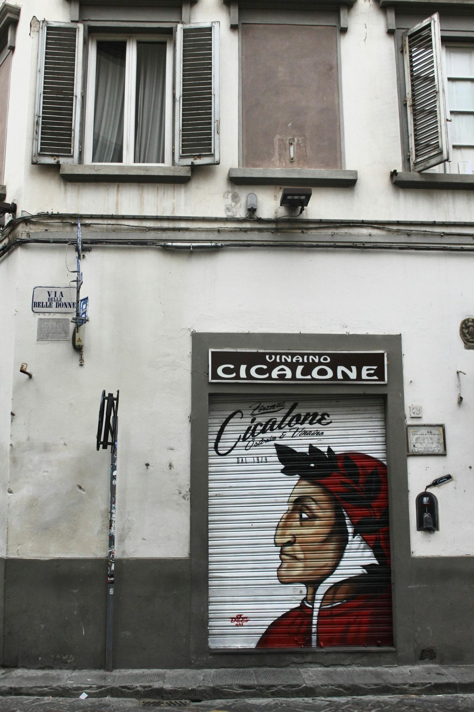

The Italian dialects stem from Latin with distinct roles from standard Italian, influenced by regional languages.
Il processo di evoluzione dei dialetti italiani è estremamente affascinante e rappresenta un importante capitolo nella storia linguistica del nostro paese.
I dialetti italiani hanno radici nel latino, ma nel corso dei secoli hanno sviluppato ruoli e caratteristiche distinti rispetto all'italiano standard. È interessante notare come la regione toscana abbia giocato un ruolo storico significativo nell'affermazione e nella diffusione dell'italiano letterario. Le influenze linguistiche regionali hanno contribuito a una straordinaria varietà di espressioni e modi di dire, conferendo a ciascuna zona d'Italia una ricca e vibrante tradizione linguistica.
Questa diversità dialettale non solo testimonia la nostra ricca storia culturale, ma è anche un ponte verso l'apprendimento e la valorizzazione della lingua italiana attraverso lezioni private efficaci e coinvolgenti.
Prima di tutto, è fondamentale capire che i dialetti, proprio come l'italiano, derivano dal latino, ma non sono una sua corruzione. Hanno semplicemente seguito percorsi evolutivi differenti, ricoprendo vari ruoli sociolinguistici. Mentre l'italiano è la lingua ufficiale della comunicazione in Italia, i dialetti sono spesso relegati a un uso più familiare e locale.
La preferenza storica per il toscano, grazie alla sua ricca letteratura del Trecento (pensate a Dante, Petrarca e Boccaccio), ha avuto un impatto significativo sulla diffusione di questa variante in tutta la penisola. Ma, cosa interessante, i dialetti avrebbero potuto prendere una direzione completamente diversa se, ad esempio, la poesia siciliana del XII secolo avesse avuto un impatto simile.

Contrariamente a quanto accaduto in altri paesi europei, la diffusione dell'italiano non è stata il risultato di un'imposizione statale, ma di un processo più organico, soprattutto fino all'unificazione dell'Italia.
Riguardo all'origine dei dialetti italiani, è cruciale notare che, nonostante il latino sia stato la lingua progenitrice per molti di essi, ci sono eccezioni significative in alcune regioni, dove le influenze linguistiche includono tedesco, sloveno, greco e albanese, mostrando così la complessa tessitura linguistica del nostro paese.

I dialetti italiani vengono tutti dal latino, ma ci sono alcune eccezioni. Alcuni dialetti in specifiche zone hanno influenze da altre lingue come il tedesco, lo sloveno e il greco. Questo mostra quanto sia varia la lingua in Italia.
In Italia, i dialetti si possono dividere in due grandi gruppi: quelli del nord e quelli del centro-sud. Ogni gruppo ha le sue caratteristiche speciali.
fonte: Dialetti d'Italia
Parole Chiave
| Dialetti | Modo di parlare di una regione o parte di un paese. |
| Lingua | Il sistema di parole e grammatica che usiamo per comunicare. |
| Italiano | La lingua ufficiale dell'Italia. |
| Latino | Una vecchia lingua da cui viene l'italiano e altri dialetti. |
| Comunicare | Parlare o scrivere per farsi capire dagli altri. |
| Ufficiale | Qualcosa di formale o riconosciuto dal governo. |
| Famiglia | Gruppo di persone imparentate, come genitori, figli, nonni. |
| Regione | Una grande area di un paese dove le persone possono parlare o vivere in modo simile. |
| Scrittori | Persone che scrivono libri o storie. |
| Popolare | Qualcosa che molte persone conoscono o usano. |
| Nazione | Un altro modo per dire "paese". |
| Influenze | Effetti che una cosa o una persona può avere su un'altra. |
| Varia | Qualcosa che ha molte parti diverse o tipi. |
| Gruppi | Insiemi di cose o persone messe insieme perché hanno qualcosa in comune. |
| Caratteristiche | Qualità o parti speciali di qualcosa o qualcuno. |
| Studio | L'atto di imparare qualcosa, come a scuola. |
| Divertente | Qualcosa che ti fa sentire felice e ti fa ridere o sorridere. |
Esercizio
Domande
- Da cosa derivano l'italiano e i dialetti?
- Perché il toscano è diventato importante in Italia?
- L'italiano è stato supportato da un apparato statale prima dell'unità d'Italia?
- I dialetti tedeschi sono derivati dal latino?
- Come sono suddivisi i dialetti italiani secondo il testo?